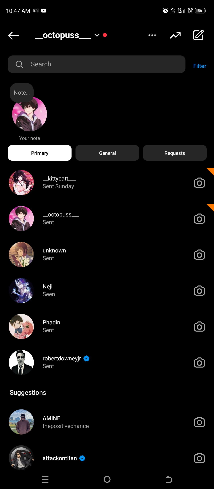

Aiesteru
its truly beautiful isn't it... when
he said .....
“To love without condition, to talk without intention,
to give without reason, care without expectation,
“Love is nurtured by trust, respect, and understanding.†that's the spirit of true love.”
“It is a love that is beyond the physical, and it is a love that is spiritual. It is a love that is eternal.”
“If you really love that person, learn to wait. Maybe you are not meant to be together today, but meant to be in the future.”
“Love is the energy that binds souls together.”
"If you want to understand love, don’t use your eyes. Open your inner eyes because the truth is not associated with beauty. It’s related to emotion."
“A man is made by his beliefs. As he believes. So he becomes.”
“There are three gates to self-destruction and hell: Lust, Anger & Greed.”
“I have a purpose for your pain, a reason for your struggle, and a reward for your faithfulness. Trust me and don’t give up.”
“I regard as great even the smallest gift offered by my devotees in pure love, but even great offerings presented by non-devotees do not please me.”
“Blessed is a human birth, even the dwellers in heaven desire this birth, for true knowledge and pure love may be attained only by a human being.”
“The Key to happiness is the reduction of desires.”
“Do everything you have to do, but not with ego, not with lust, not with envy but with love, compassion, humility, and devotion.”
“Calmness, gentleness, silence, self-restraint and purity: these are the disciplines of the mind.”
how beautiful it is to listen to that person krishna, how amazing feel it give us when we made up ourselves to follow those words...
2-November-2023 2:26AM
konichiwa mitsuha chan
... so happy to see this from you, dont mind i just woke up, just checked and i found that you... feeling so happy , i can't describe what in my heart now it's just like some sort of feel
🥺🥺🥺
*No problem that you take time to reply I can understand, hectic routine so more focus should be in studies and career
i thought i might have no chance when im not with my laptop now it's' not like that, now i started doing in mobile
😅 im happy and stupid at the same time. now sorry for replyÃng bà ck at time like this, 🙄 im just you know right how much happy ià m not after seeing your text...
sure i will prove and do beta in studies and carreier also, just wait to see me reach the shore. 😁
*arey.. sorry for such questions, i just said cause I just felt and normally people are like this only
oii why saying sorry, huh!!! when i say tbat my girl, it mean youre the only one to go for such questions or what ever, im always here to understand you pactiently. even if im out if patience i will get more ane more till to underatand, so dont say sorry okay, if i miss understood any i will straight ask in face.
so dont over think, instead good take care of your health
my good girl my good good girl, dont overthink okay, you octobus have 8 limbs to hold you close and tight...
Dont worry’ for my studies, I am getting enough of help here, you should be more conser about your one and seems like you are doing great, and I know you can do more better, topper.
in that case so happy to know that you enough of help, but if you want any dont hesitate to ask okay., and my case im not the topper, just trying to push forward my limits. im tbe strongest ^-^ hehehehe..
but if i can say one thing i will make stand and worth of your beliefs, i will do my best, even best on moving forward...
*Talking about trust I dont actually trust anyone from time to time I go bonkers about this..
when come to trusti will not ask for it, i just prove myself to earn. and inmost i see it always like my responsibilty even if get trusted or not staying true is what i choosed and i will prove to my girl... so dont trust me ^-^
*Bite 😑 if you dare.. dont you 😾I kill you then..
hmm... let me bite and confirm it then 😋 shall i my sweet potato 😋
*markoni union weightloss.. this name of music is weird feel like dite to get slim
first i even thought the same then after listenning i changed my mind. but tgat was amazing isn't it?'
*I have earned around +1000 in Sep and Oct by doing their project work and selling cute stationeries in 50% profit.. damn it ! It's not enough.. I need more ways earn. As a student if I can make +20k that will be better, isn't it ?
wow thats so amazing you did, now you even started become my motivator. that reà lly amazing your mind.
*health.. my health? I' don't know
if you dont care youreslf well then i may choose to past twice a week 🙄.
im not black mailing, i also gonna same for my health lije you if you dont take care of yourself
*Ah! that's nice that you remembered almost everything.. ok so let's test you answer the questions and do what I say, this way you will even clear my doubts.. hheh!
i didnt understood what you said here,i mean where the questions are.
b
*Wow you got 92% in your subjects! Show me?
okay just wait once after i reach home i wiil show you.
Hey if someone praises you then you should appreciate it and respect each and every one no matter who is it
sure me always i will follow what you said and i will be always stay kind to them even if i pose anti-social all the time, even i been introvet i will never forget/fail to appreciate or follow what you said
And dont get feaver so often, cause I am not there to cure you.
you know what after this what i suppose to say, only thing speaking is now my eyes, the tears . im still in train im under my blanket, trying to hold tears all the way down to ears. i will try to not get sick again, im getting fever often cz im travelling
15km each day morning 15km to ca5ch train and ecening 6pm. after retuen to home i will try to make some thought to over come the problem.
for now i will clear my tears myself cz you are bot here to do that maa,
*Arry ! Why you said your team name full form, I knew it I wrote it in communication notebook.. oh ! So my guess was correct My Only Lady Bug -1
😃 😃 😃
really,........thats thats amazing i thought you may face it hoad you a genious
thats amazing your guess. i didnt even thought that you might guess this fast.
My only lady bug - my only 1 😉
* So you like the way I ask you those questions about getting gf etc.. and oi I am not jealous of those girls, I am jealous of you that you getting girl fans . But I am proud of you too that you doing so well.
-_- i like the way you care, i always love the way you çare about me, i just wanna get the question on face by you, to kiss your fore head and answer
what 🤔, jealous of me getting girl fans. how and why i didnt even consider them as friends or even a known to me.
but im happy , so happy to make you proud of me, i will do even hard and keep my honor. and oiii, there is only one girl is there in my heart , mind and even soul and prayer. you idiot is only your, only yours. did you remember that day, you asked me this in saying voice . i send but you didnt plà yed but the same day afternoon its all become different envirement.
one tbing i can say heartfully, that i love you so much and there no other girl can get my attention its only you that one whom i love from soul its only you in the name of god...
hey now its 4am i will try to get sone sleep and mobile also about to low battery so good night sweet dream, always love you, my mitsuha chan...
your taki....
9:30 AM
ohio mitsuha chan...
now im about to reach there in 50km to the destination
*You ! Stop it I am not a potato... I will call you Tomato now -_- stop or else!
Oi tomato! You keep saying that you love me so much, so will you love me if I get ugly, fat and disheartened? Will you still ?
my cute sweet potato, look into my eyes they will say you everything, every day, after i woke up, before i goto sleep, in every time pray to God , you always be in there. i dont know how to express, you asking, fat , ugly , disheartened .... even i dont known what else exit. I loved you heartfully with out even listening to your voice and seeing you, then how can it be changed on these things you saying.
if you think loving you from distance is hard, its not like that. it build trust ever lasting love, i wanna look into your eyes kisss your forehead and heartfully wanna this "no maatter from and to then, i always love you from the bottom of the heart". even if you bite be tourcher me beat me i always love you the same. even if you went into tarumas just like from past i always stay by your side. when i said you that i want to spend the rest of my life with you, that day i comiited my self to love you like i love myself, i even saw in bible that god said love your wife like you love yourself... i always love you my puja
always more and more , you know what while im saying this im listening to your song a thousand years and im about to complete the song after you ^-^
stupid stupid i thought to surprise you but you bad...bad... you made me say it -_-
huh!!! my stupid potato i always love you so much and more
*Huh! 🤩Wow you send that movie 😆 thank you soo much , btw have you watched it?
arey how you thought that i will watch without you.. ah how?
*Hey from where did you learn to say such sweet motivational words .. and seems like you even flirting with me, ..
huh!!! if you were infront of me then i may bite your................. ........................nose and wanna ask,
Am i flirting? -_-
what it mean by even with you????
i will bite you bite you bite you and eat you and gonna ask this question again -_-
stupud potato
-_-
im angry on that question -_- the will only down after i bite you, ok !!! so if i suddenly appear infront of you and bite dont question me why -_-
*Wow the teacher is indicating you that you might be the best student in his teaching career, now it is your turn to prove him right, I will to see you shine. It is not just hope it your opportunity it your chance.
im gonna stand hard on acedemics to prove myself and show you hehehe;!;
*It is not a movie.Did you make up the story by yourself? Tupu and Bunn.. you imagining story based on you and me!
may or may not be, i actually got a dream , i dont know how to say how beautiful the dream is so, i just tried to say you the way by mixing both your night mare and mydream. sorry if i said anykind of bad
*I am fine almost everytime except for sometime and very rarely I lose my mind, or it all good, what about you?
i guess im also well, and please do good takecare of yourself ok...
*wow you are in next level, that's is so amazing. I knew you are the best come on keep it up, be confident and don't lose hope you can go big 🌟 shine bright like a diamond
Hai, Master i will never give up and always keep moving forward , no matter what i will try my best to be the best.
*Cool you specs are so cool , it looks good on you. By the way the fame is purrfect but change the glass it seems cheep with no Anti-reflective coating , and if you were specs then keep your glasses clean and clear always.
yes yes im also thinking to change the lens and the frame you chosed is so amazing mom also like it so much...
*your project look nice, so did your project won the competition? Show me more of your project!
we won the level 1 and what i send you is the algorithm i will send you rest of the project after i reach home cz it is in my laptop
and we eaiting for the result to show off in level 2
*Show me your results also the one you scored 92% ?
this one also at home so i will show you once after i reach home
*Do you use Instagram? Oi say me your current ID of Instagram!
im not using it sometimes to update that time few reels
😅

*So where is this place (500km away) that the compitition taking place?
visakapatanam - city name ; hosting college is 'gitam college'
*By the way by your pictures, are you losing weight? You being slim, do you do power workout?
yess yess im doing, and when come to pics, did you foget about january 1 pic deal
be patient my girl
I feel like you really can bring life to fantasies , and you will just keep on working hard ... JUST KEEP SWIMMING swimming swimming swimming.... Itteriasai 🙇🏻‍♀️
i will keep my honor, and stand strong for us always
Aisteru...
please be safe and strong
oii did you trimming nails once every 3 days?